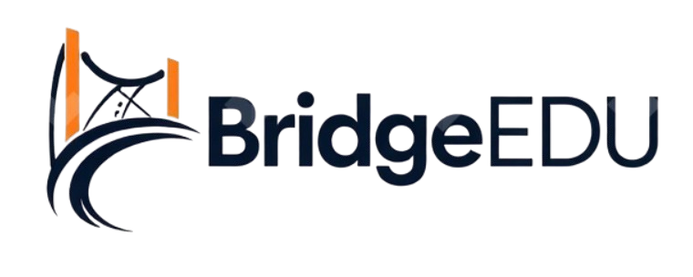

Clear communication across cultures, classrooms, and leadership
BridgeEDU is grounded in postgraduate research exploring communication between foreign teachers and school leaders in multilingual and intercultural educational settings. This page explains the thinking behind the project in a clear and accessible way.
The broader research behind BridgeEDU examined how communication works between foreign English language teachers and school leaders in educational environments shaped by language difference, cultural diversity, institutional expectations, and digital communication tools.
The project considered how teachers and leaders interact professionally when their responsibilities, expectations, and communication styles may not always align neatly.
The research was shaped by the reality that multilingual schools often operate across different cultural assumptions about clarity, hierarchy, formality, and professional interaction.
Rather than stopping at theory, the wider purpose was to identify insights that could support clearer communication in real school environments.
A website like BridgeEDU needs more than a good idea behind it. It also needs a genuine foundation. The research matters because it helps show that the communication issues addressed here are not random observations or isolated frustrations. They reflect broader patterns that can shape working relationships, confidence, interpretation, and daily professional life in schools.
That does not mean every school looks the same. It means there is enough substance behind these themes to justify building better support around them. BridgeEDU takes that step by turning insight into clearer explanation, practical pathways, and usable materials.
This page is not intended to reproduce an academic chapter in website form. It is here to give visitors confidence that the project has depth, credibility, and a serious purpose.
Research matters most when it helps people understand a real problem more clearly and move towards something more useful.
That principle sits at the heart of BridgeEDU.
The wider thesis behind BridgeEDU used a structured quantitative approach to examine communication in educational settings from more than one angle. The aim was to build a clearer picture of the issue rather than rely on one single source of insight.
One part of the work examined existing studies to identify patterns and relationships connected to communication, ICT use, and intercultural educational settings.
Another part explored the views of foreign English language teachers working in relevant contexts, helping to connect broader research patterns with lived professional experience.
The value of the project was not only in analysing data, but in interpreting what those findings may mean for clearer professional communication in schools.
For visitors, the research page helps answer an important question: why trust this platform? The answer is not that research solves everything on its own. The answer is that it gives the project weight, direction, and legitimacy.
That matters when people are deciding whether to read further, use a resource, or eventually invest in a product. A strong foundation helps visitors feel that the material has been thought through carefully and developed for a genuine educational purpose.
In that sense, this page is part of the bridge between credibility and practical value.
View ResourcesThe ultimate purpose of BridgeEDU is not simply to present findings. It is to create something useful from them. That means moving from research insight towards language, guidance, resources, and tools that can support clearer communication in real educational settings.
Research can help people name and understand communication problems that might otherwise feel vague or personal.
When findings are interpreted carefully, they can support more thoughtful and practical advice for teachers and school leaders.
Products built on a credible foundation have a stronger chance of being useful, relevant, and worth returning to.
Explore the resources and toolkit that build on this research foundation and turn communication insight into something clearer, more structured, and more usable.